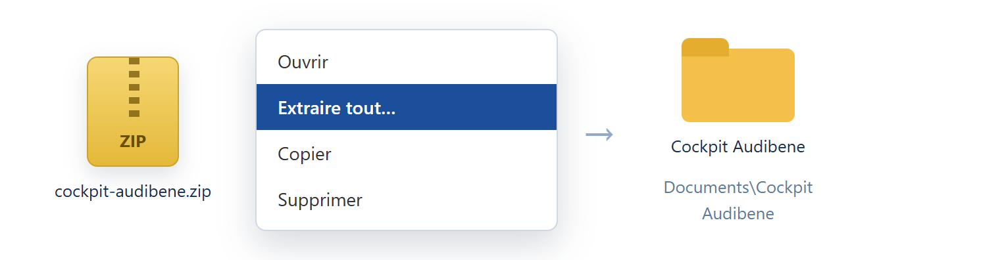
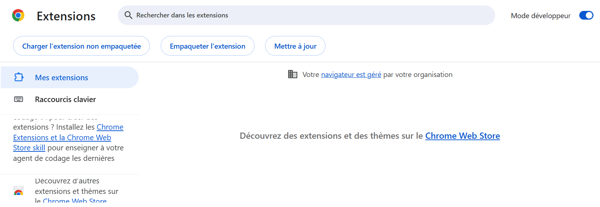
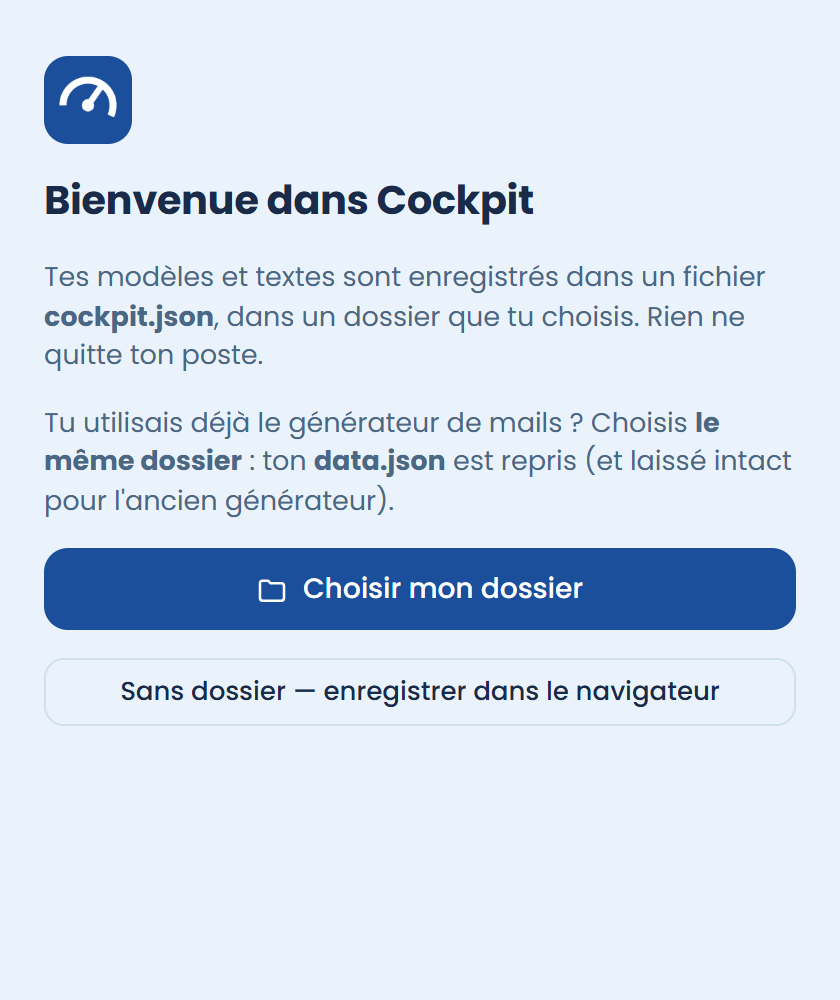

Cockpit Audibene
Le panneau latéral qui fait en un clic ce qui en prenait quinze dans Salesforce.
Télécharger le zip
Dernière version : …. Les deux zips ont les mêmes fonctions ; seule la disposition change. N'en installe qu'un.
Décompresser le zip dans un dossier que tu gardes
Clic droit sur le zip → Extraire tout… → par exemple Documents\Cockpit Audibene. Ne supprime jamais ce dossier.

Charger l'extension dans Edge
Ouvre edge://extensions, active le Mode développeur, clique Charger l'extension non empaquetée et choisis ce dossier.

Même chose dans Chrome avec chrome://extensions.
Ouvrir Cockpit sur une fiche Salesforce
Appuie sur Ctrl + Shift + Espace (ou clique l'icône bleue) : le panneau s'ouvre à droite. La première fois, clique Choisir mon dossier, puis donne ton nom.

Tu utilisais le générateur de mails ? Choisis le dossier où est son data.json : tes modèles sont repris.
⚠ Tes données : à lire une fois
Tes modèles et tes réglages vivent dans Edge, avec une sauvegarde (cockpit.json) dans le dossier choisi au premier lancement.
- Ne clique jamais « Supprimer » sur la carte Cockpit dans
edge://extensions: ce qui n'est pas dans ta sauvegarde serait perdu. Pour mettre à jour, on remplace le contenu du dossier puis on clique ↻ (voir juste en dessous). - Quand Cockpit affiche « Autoriser », clique : c'est ce qui met ta sauvegarde à jour. Si elle a plus de 7 jours, Cockpit te le rappelle.
- Pour vérifier : roue ⚙ → Données → « Dernière sauvegarde dans le dossier ».
Mettre à jour plus tard
Télécharge le nouveau zip, remplace le contenu du dossier, puis clique ↻ sur la carte Cockpit dans edge://extensions. Jamais « Supprimer » : tes données sont dans la carte.